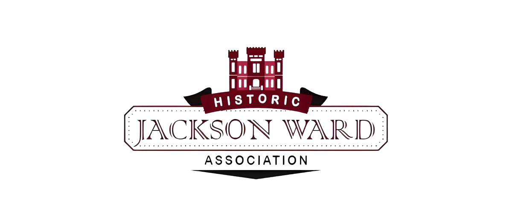
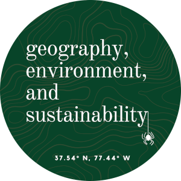
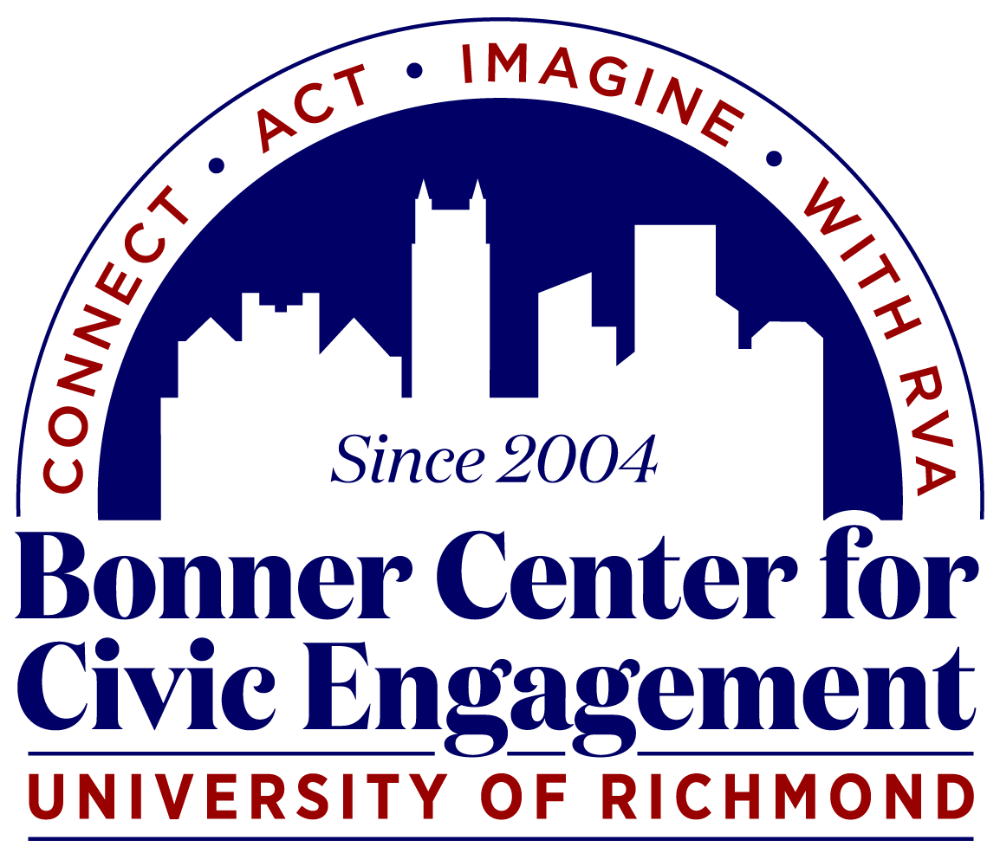
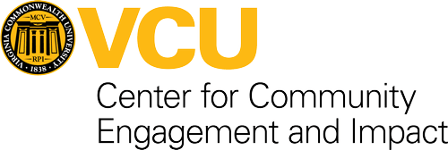
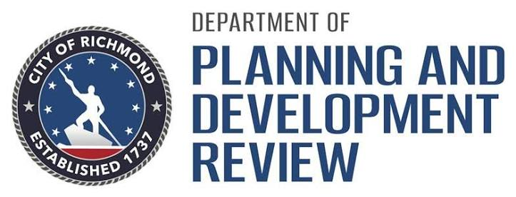
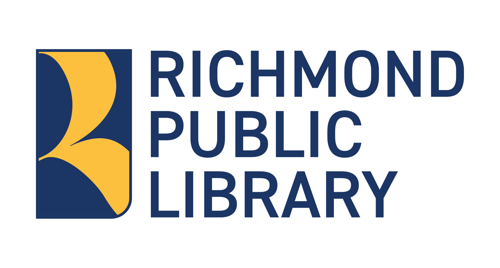

The research is led by Dr. Kyle Redican (University of Florida, previously University of Richmond) and carried out with undergraduate students, much of it produced in the University of Richmond's Spatial Analysis Lab (SAL), where students learn GIS, mapping, and spatial analysis and apply them to real projects. Students bring these geographic and historical tools to the questions the community sets.
The exchange runs both ways. The university offers scholarly capacity and student energy. Jackson Ward offers students something no classroom can: direct experience of the history they are studying, and a place in a living community while they navigate their own education. That reciprocity is the standard the partnership holds itself to.
Other partners have contributed to individual projects along the way, including the City of Richmond, VCU, and MapRVA.
Preserving Richmond's historic Jackson Ward
Founded in the 1980s, the Historic Jackson Ward Association represents the residents of the neighborhood and is committed to building awareness of its history, preserving this significant Richmond district, and integrating that history into the modern-day experience. The association works alongside residents, city officials, and local institutions to protect a neighborhood whose National Register inventory lists more than 600 significant historic structures, and which holds more cast-iron work than any neighborhood outside New Orleans.
Their partnership grounded this research in the community itself, guiding students toward the stories, sites, and sources that matter most to the people of Jackson Ward.





